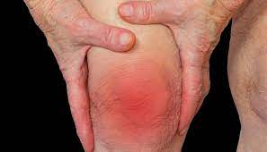
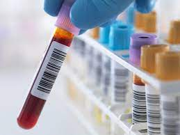

Cultivos
* Recuerda que, los cultivos se tardan 3 días para el resultado.
* Utilizar frasco estéril.
* Si es Urocultivo (orina) de preferencia que la muestra sea la primera de la mañana.
* Si tiene alguna duda o pregunta puedes mandarnos un mensaje
Ver detalles »Pruebas de embarazo
✓ Precio accesible
✓ Resultado en 30 min aproximadamente
✓ Preguntas o dudas, puedes escribirnos será un gusto atenderte

Pruebas reumáticas
* Factor reumatoideo (FR)
* Proteína C reactiva (PCR)
* Antiestreptolisina O (ASLO)

Exámenes
Si necesita más información sobre todos los exámenes de los que disponemos presione el botón de abajo